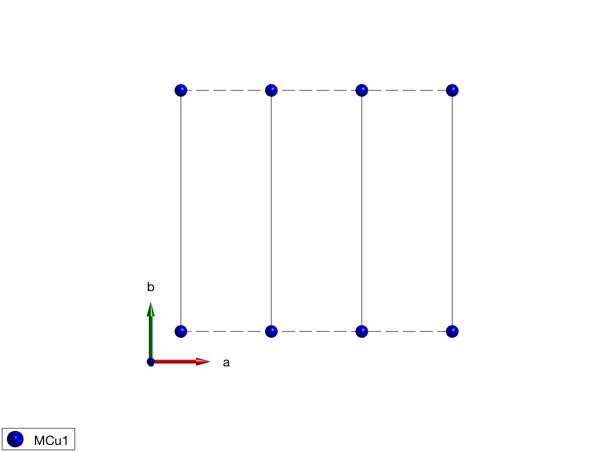
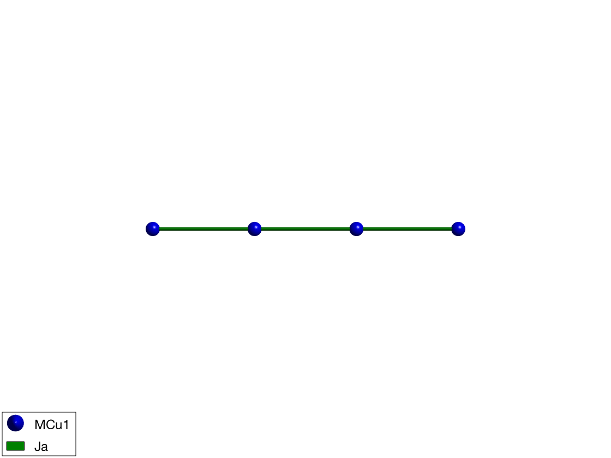
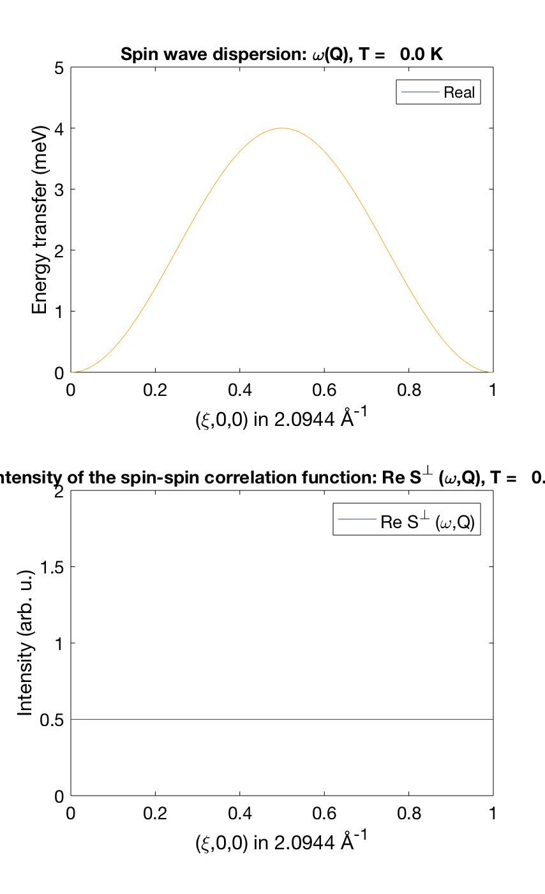
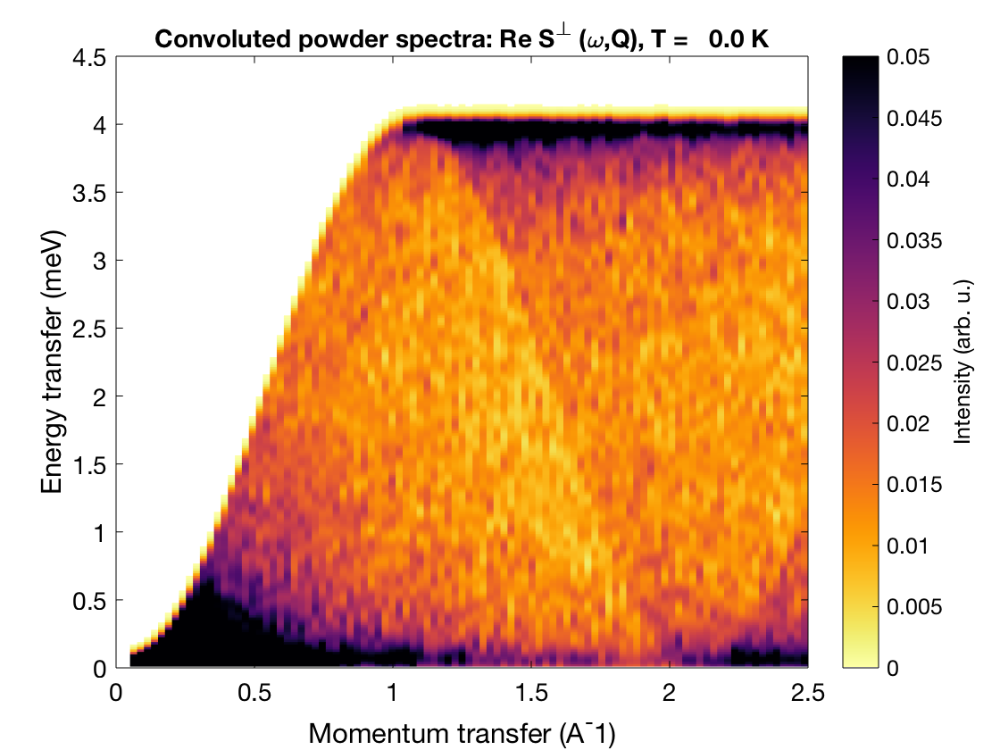

Spin wave spectrum of the Heisenberg ferromagnetic nearest-neighbor spin chain
The following tutorial shows every step necessary to calculate spin wave spectrum through the simple example of the ferromagnetic spin chain
Contents
Define spin chain with magnetic atoms
The shortest lattice parameter along the a-axis will give the first neighbor bonds along this axis. After defining the lattice, we add a magnetic Cu+ ion with spin S=1 at the origin of the unit cell and plot the lattice.
FMchain = spinw; FMchain.genlattice('lat_const',[3 8 8],'angled',[90 90 90]) FMchain.addatom('r', [0 0 0],'S', 1,'label','MCu1','color','blue') FMchain.plot('range',[3 1 1])
Determine the list of bonds based on length
To consider bonds up to 7 Angstrom length we use the sw.gencoupling() function. Since no symmetry operators are defined, it sorts all bonds according to increasing length, all bonds are equivalent that has the same length within an error bar (0.001 Angstrom by default).
FMchain.gencoupling('maxDistance',7) % list the 1st and 2nd neighbor bonds FMchain.table('bond',1:2)
ans =
bond dl length matom1 idx1 matom2 idx2 matrix
____ ___________ ______ ______ ____ ______ ____ ______________
1 1 0 0 3 'MCu1' 1 'MCu1' 1 '' '' ''
2 2 0 0 6 'MCu1' 1 'MCu1' 1 '' '' ''
Defining the spin Hamiltonian
We create a matrix with a label 'Ja', ferromagnetic heisenberg interaction, J = -1 meV and assing it to the first neghbor bonds as spin-spin exchange interaction: J*S(i)*S(i+1). And plot the crystal structure with the added bonds.
FMchain.addmatrix('value',-eye(3),'label','Ja','color','green') FMchain.addcoupling('mat','Ja','bond',1); plot(FMchain,'range',[3 0.2 0.2],'cellMode','none','baseMode','none')
Definition of FM magnetic structure
The classical magnetic ground state of the previously defined Hamiltonian is where every spin have the same direction, the direction is arbitrary since the Hamiltonian is isotropic. We use the following parameters:
- magnetic ordering wave vector k = (0 0 0)
- there is a single spin per unit cell S = [0 1 0]
- an arbitrary normal vector to the spin n = [1 0 0]
FMchain.genmagstr('mode','direct', 'k',[0 0 0],'n',[1 0 0],'S',[0; 1; 0]); disp('Magnetic structure:') FMchain.table('mag') plot(FMchain,'range',[3 0.9 0.9],'baseMode','none','cellMode','none')
Magnetic structure:
ans =
num matom idx S realFhat pos kvect
___ ______ ___ _ ___________ ___________ ___________
1 'MCu1' 1 1 0 1 0 0 0 0 0 0 0
The energy of the ground state per spin
The spinw.energy() function gives the ground state energy per spin, the value is dinamically calculated at every call.
FMchain.energy
Ground state energy: -1.000 meV/spin.
Calculate spin wave dispersion and spin-spin correlation function
We calculate spin wave dispersion and correlation function along the chain, momentum transfer value is Q = (H 0 0). Then we calculate the neutron scattering cross section and select 'Sperp' the neutron scattering intensity for plotting. Then we plot spin wave dispersion and the value of the correlation function with the 1-Q^2 neutron scattering cross section in units of hbar/spin.
FMspec = FMchain.spinwave({[0 0 0] [1 0 0]},'hermit',false);
FMspec = sw_neutron(FMspec);
FMspec = sw_egrid(FMspec,'component','Sperp');
figure;
subplot(2,1,1)
sw_plotspec(FMspec,'mode',1,'colorbar',false)
axis([0 1 0 5])
subplot(2,1,2)
sw_plotspec(FMspec,'mode',2)
axis([0 1 0 2])
swplot.subfigure(1,3,1)
 Calculate powder average spectrum
We calculate powder spectrum for Q = 0:2.5 Angstrom^-1 100 steps resolution 1000 random Q points for every step. Then we plot the spectrum convoluted with 0.1 meV Gaussian along energy.
FMpowspec = FMchain.powspec(linspace(0,2.5,100),'Evect',linspace(0,4.5,250),'nRand',1000,'hermit',false); figure; sw_plotspec(FMpowspec,'dE',0.1) axis([0 2.5 0 4.5]); caxis([0 .05]);
Written by Bjorn Fak & Sandor Toth 06-June-2014, 06-Feb-2017